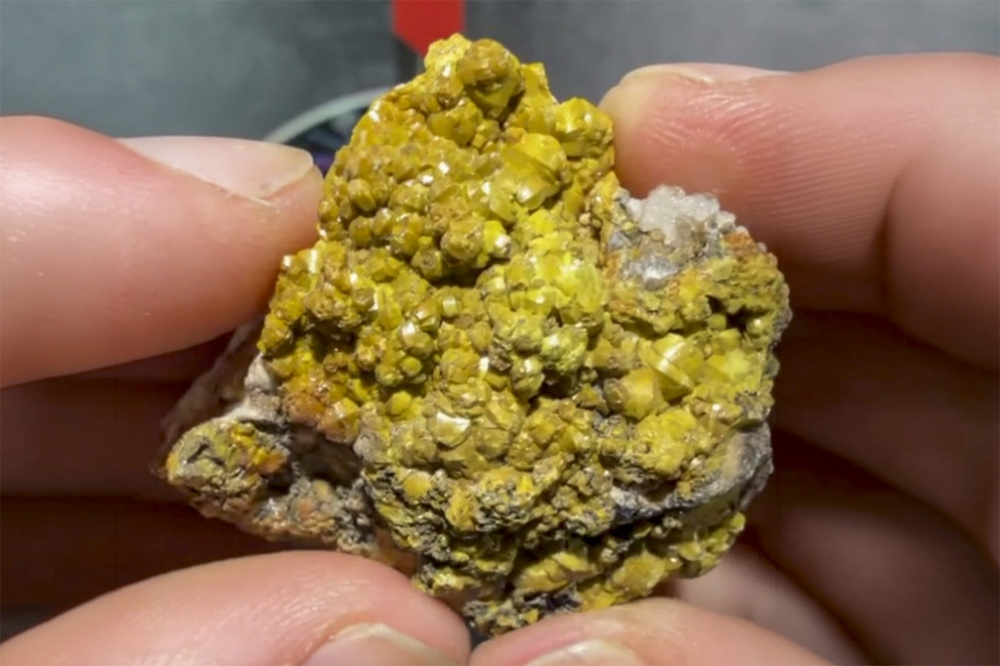

Mimetite
"Yellow Campylite"
VII-10410
Dry Gill Mine, Caldbeck, Allerdale, Cumbria, England, UK
ex Jay Lininger collection
ex Eric Quinter collection
Purchased 5/23/2026 from MinCollect for $42.67
Core Collection • In Collection
Details
Storage Type: Flat
Storage Location: 000 None
Size class: Miniature (0)
Dimensions: 4.3 × 3.1 × 3.7 cm
Mass: 53.3 g
Luster: Average, Vitreous